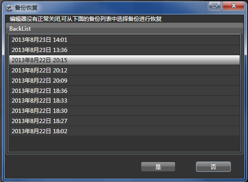

备份恢复
备份
为了保护用户的数据安全，CocoStudio应用程序会定时自动为用户做备份，用户无需设置。
备份系统会遵循以下规则：
1.每3分钟自动备份一次
2.保存最近10次备份，如果备份超过10次，将旧的备份删除
恢复
如果应用程序在编辑项目的时候，发生意外关闭情况（包括但不限于:程序崩溃、系统死机、意外断电）时，用户再次打开原项目，软件会弹出如下备份恢复窗口：

用户可以根据自己的需要，渲染恢复制定时间的备份。
注意
1：备份进行恢复后，该操作无法进行回退；
2：建议恢复前先将项目再做一次拷贝，以防恢复的不是需要的内容。
Copyright © 2013 CocoStudio.org. All Rights Reserved. 版本v1.0.0